Iron Lady LMS
Product Walkthrough · Learner, CX & Admin
Part A
The Learner Experience
What your participants see and do
Learner · Slide 1
Signing in
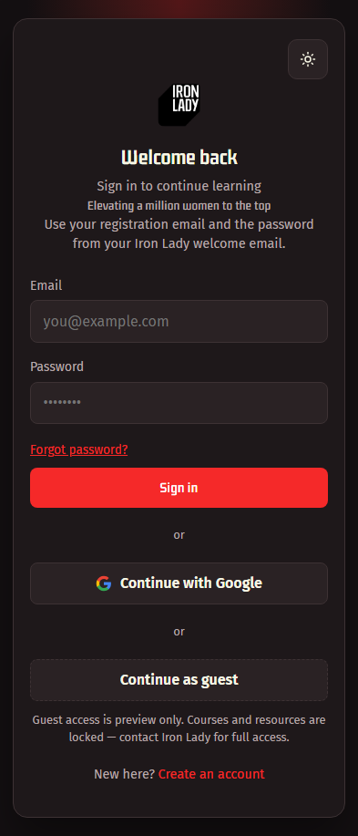
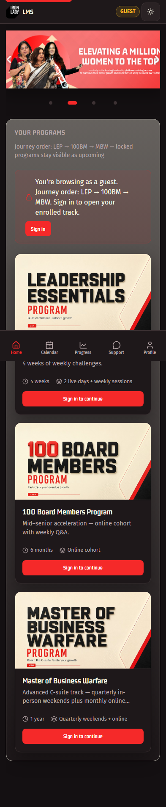
- Open the LMS and sign in with your registered email and password.
- You can also continue as a guest to preview the programs.
- Guests see all three programs but cannot open any content.
Learner · Slide 2
Your dashboard
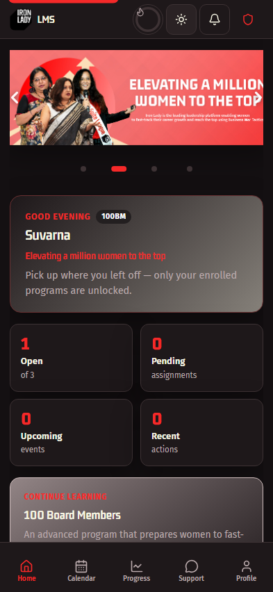
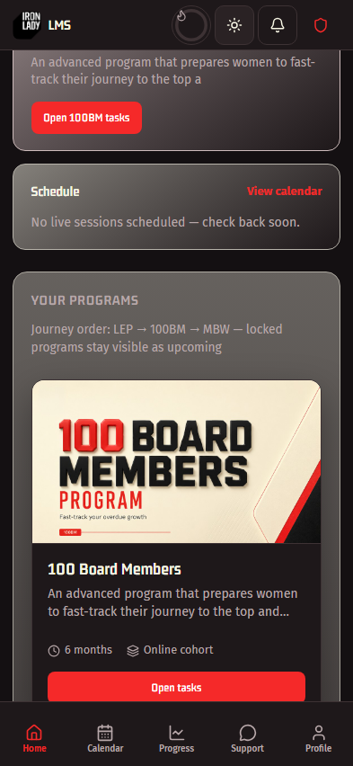
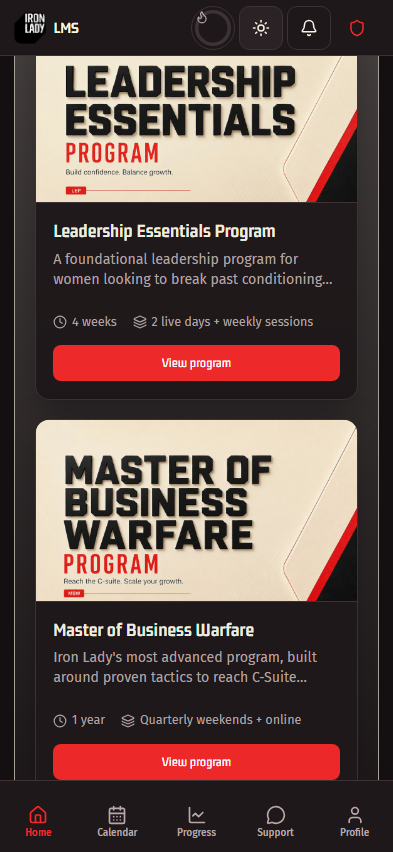
- After signing in you land on Home, with a greeting and your program badge.
-
Quick stats show open programs, pending assignments, upcoming events and recent actions.
- "Continue learning" takes you straight back to where you left off.
- Scroll down for your programs, announcements and progress.
Learner · Slide 3
Opening your program
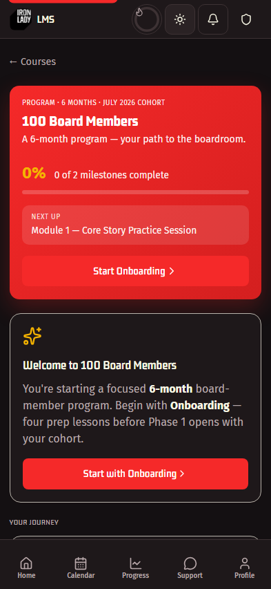
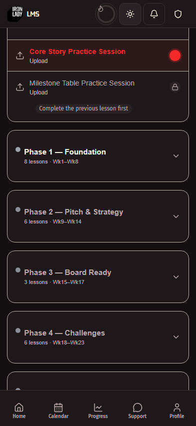
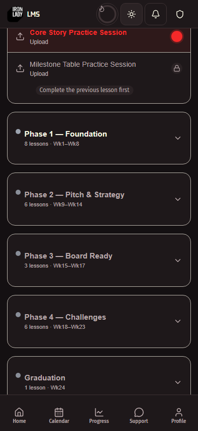
- Tap your program on Home to open its journey.
- The header shows your cohort, overall progress and the next lesson.
-
"Your journey" lists every phase — each opens only after the previous one is
complete.
- Locked phases show a padlock with the reason.
Learner · Slide 4
Watching a lesson
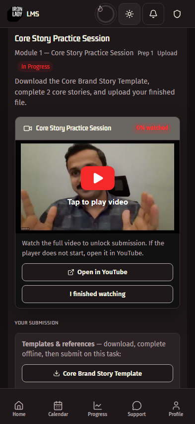
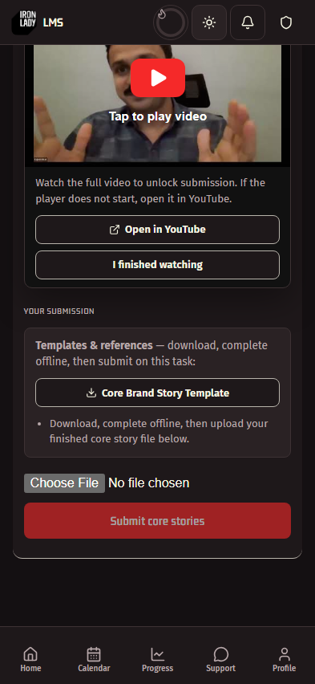
- Open a lesson to see its video, description and any templates to download.
- Watch the video — the counter shows how much you have completed.
- The submission form stays locked until you reach 90%.
- For YouTube videos, tap "I finished watching" to unlock it.
The 90% rule makes sure the lesson is watched before work is submitted.
Learner · Slide 5
Submitting your work
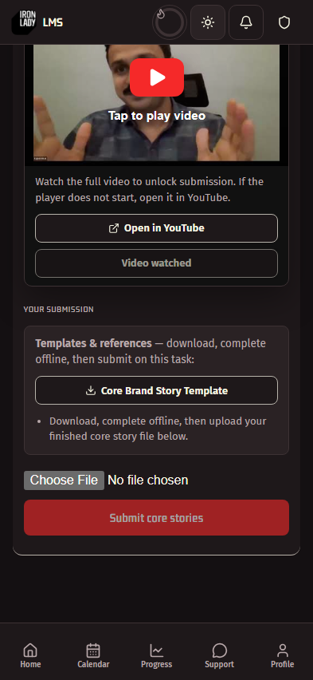
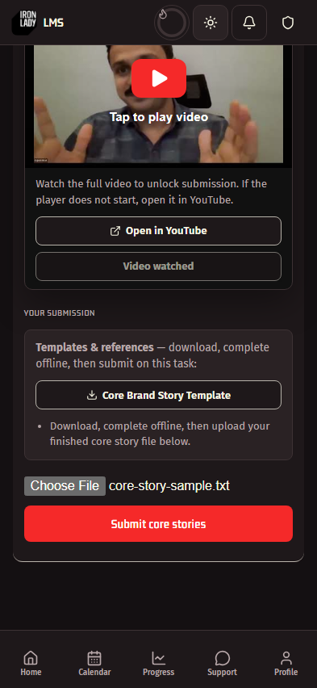
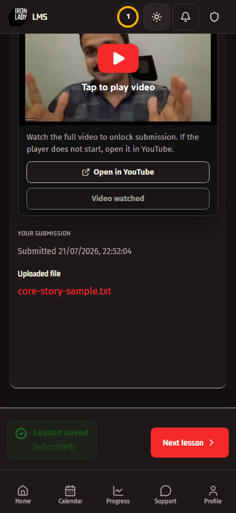
- Once the video is watched, the submission form unlocks.
- Download any template provided, complete it, then choose your file.
-
Tap Submit — a progress bar appears while the file uploads, and you can cancel it.
- You'll see "Submitted" with your uploaded file, and Next lesson opens up.
Learner · Slide 6
Tracking your progress
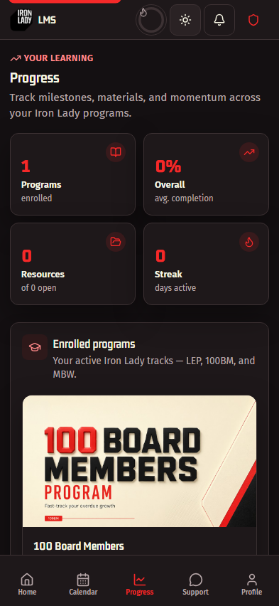
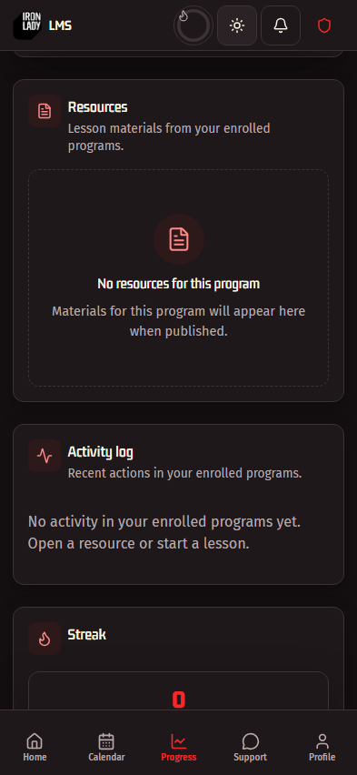
- Progress shows your programs, resources, streak and overall completion.
- Tap any stat at the top to jump to that section.
- "Continue to study" resumes at your exact next task.
- Resources can be filtered by program and opened in a new tab.
Learner · Slide 7
Calendar, support & profile
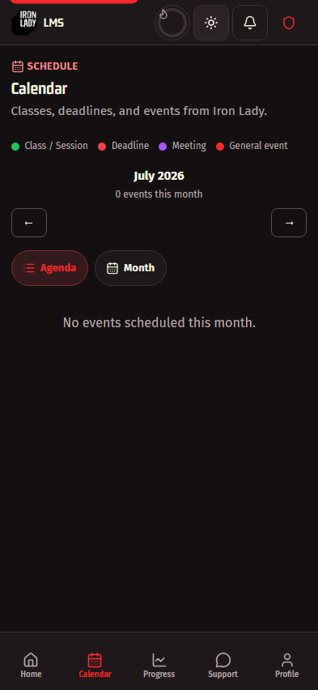
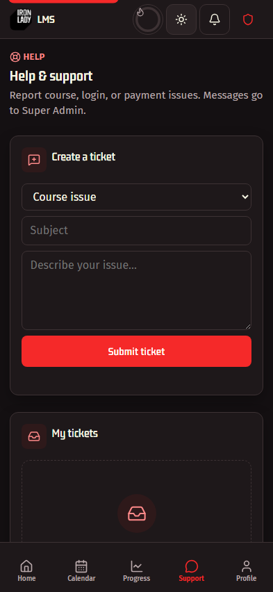
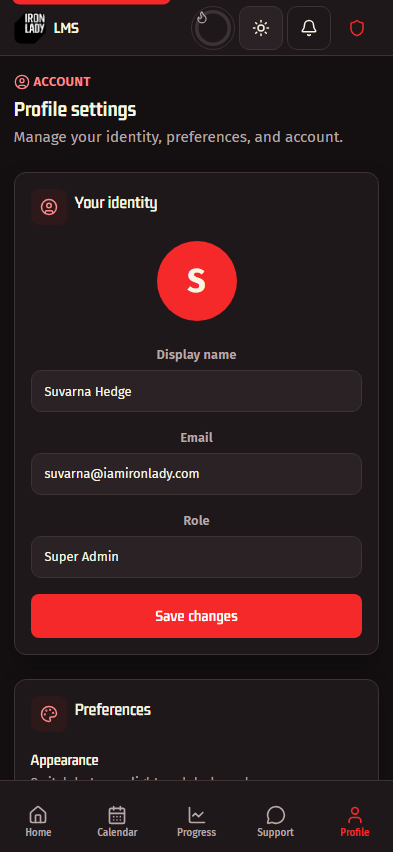
-
Calendar — classes, deadlines and meetings; add any event to Google
Calendar.
-
Support — raise a ticket, reply to staff, and track it until
resolved.
-
Profile — change your display name, switch light/dark mode, and
sign out.
Part B
The CX Workspace
How the Customer Expression team runs a cohort
CX · Slide 1
CX home
- Sign in as a CX member to land on your program's workspace.
- The top row shows participants, items needing attention, and task completion.
- "Needs your attention" lists submissions ready to review or waiting on a resubmit.
- Your batches sit on the right, each with a Remind button.
CX · Slide 2
The review queue
- Open Reviews to see every submission for your program.
-
Filter by All, Needs review, or
Awaiting resubmit.
- Narrow further by batch.
- Open a row to review the learner's work and choose an outcome.
Approved → learner moves on. Needs improvement or Rejected → feedback is required,
and the learner is notified to resubmit.
CX · Slide 3
Reviewing a submission
-
Open a submission to see exactly what the learner sent — text, links, files, video
or a template.
-
Choose an outcome: Approved, Needs improvement, or
Rejected.
-
Feedback is required for Needs improvement and Rejected — the form will not save
without it.
- Save the review. The learner is notified and can revise and resubmit.
CX · Slide 4
Managing batches
- Create a batch and give it a name and description.
- Add learners, move them between batches, or remove them.
- Upload session recordings for each phase — only that batch can see them.
- Track attendance and completion per learner.
CX · Slide 5
Analytics
- Analytics shows cohort health across your whole program.
- Charts cover the learner journey, payment status, activity and task completion.
- Click any bar or segment to see exactly which participants it represents.
- Switch tabs for a per-batch or per-task breakdown.
Part C
Administration
Managing users, content and integrations
Admin · Slide 1
Admin overview
- The overview summarises accounts, learners, courses, resources and enrolments.
- Open tickets are flagged at the top.
- Charts break down users by role, ticket status, activity and signups.
- Export any of it to CSV for reporting.
Admin · Slide 2
Users & roles
- Search any account by name, email or role.
- Change a role: User, Customer Expression, Admin, or Super Admin.
- Assign a CX member to their program.
- Block or unblock a learner — staff accounts are protected.
Admin · Slide 3
Courses & resources
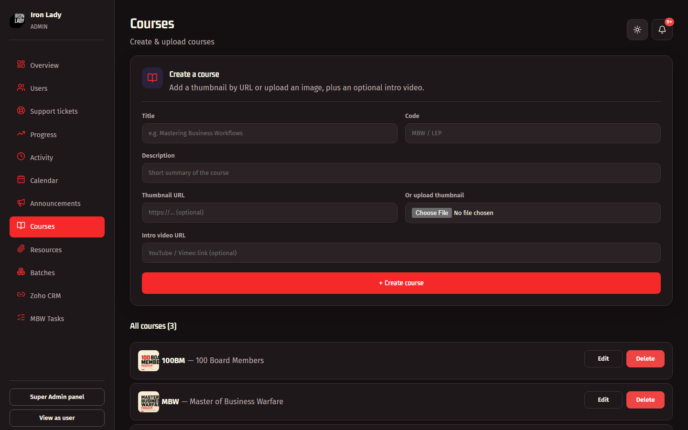
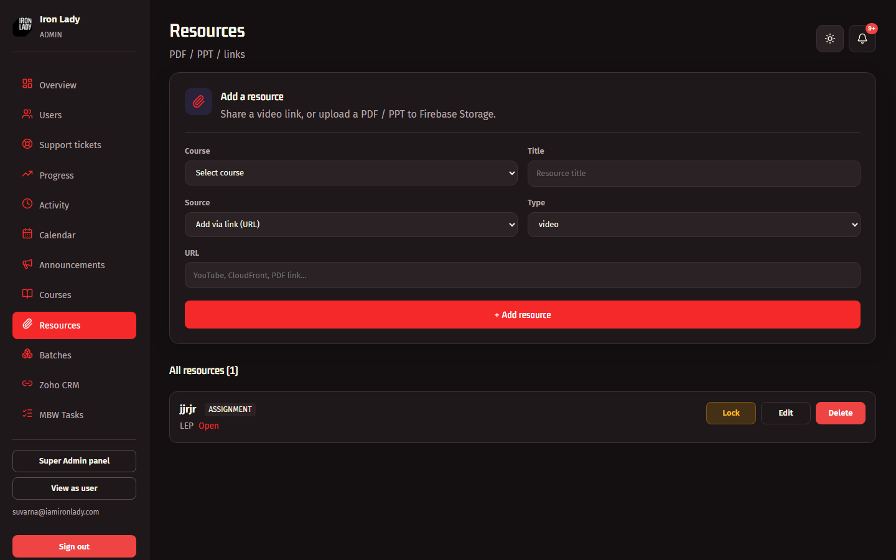
- Create a course with a code, description, thumbnail and intro video.
- Add resources by link or by uploading a PDF or PPT.
- Lock a resource to hide it from learners until you are ready.
Admin · Slide 4
Batches & enrolment
- Create a batch, choose its program, and assign CX leads.
- Add learners to the batch.
- Add a course to the batch — this is how learners get enrolled.
- Move members between batches or remove them.
Admin · Slide 5
Announcements & events
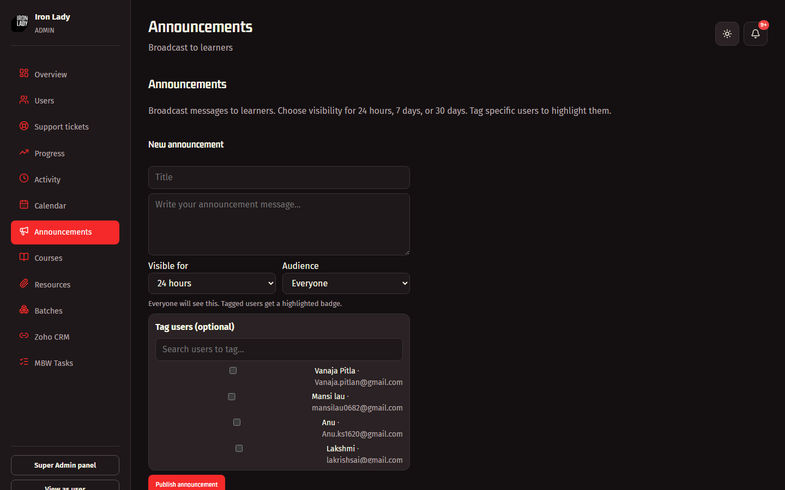
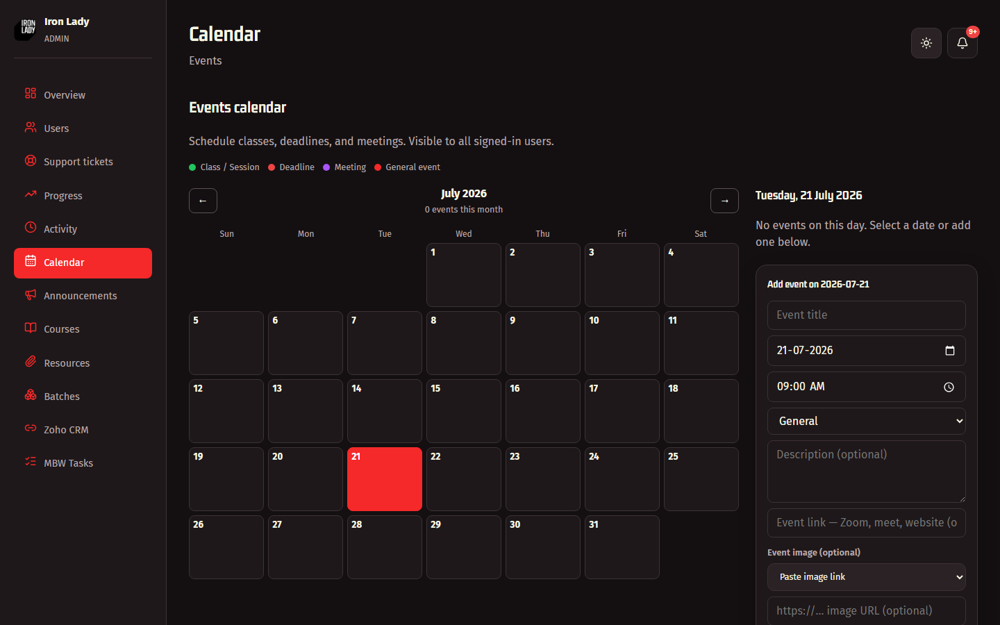
- Publish an announcement to everyone, or tag specific learners.
- Choose how long it stays visible: 24 hours, 7 days or 30 days.
- Add calendar events with a type, joining link and image.
- Both appear immediately on the learner's Home and Calendar.
Admin · Slide 6
Zoho CRM integration
- Programme, payment status and login credentials flow from Zoho into the LMS.
- Test connection checks the CRM link is healthy.
- Provision creates or updates an LMS account from a Zoho record.
- Browse Zoho Leads and IL Users to find anyone in the CRM.
End
Thank you
Iron Lady · Elevating a million women to the top